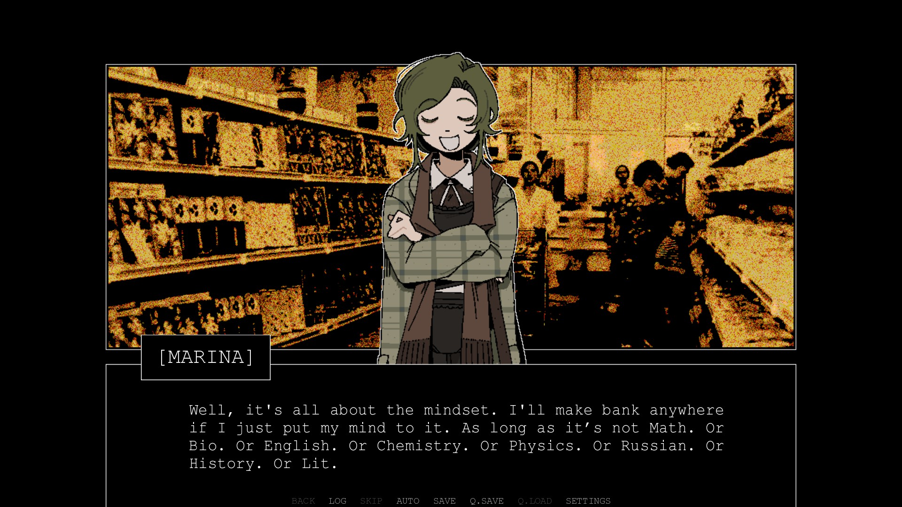
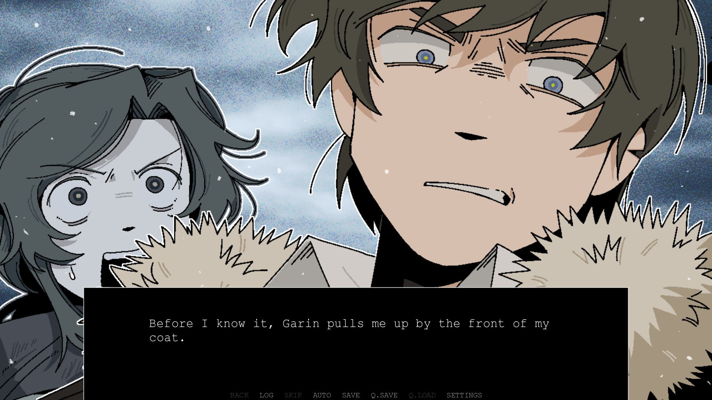
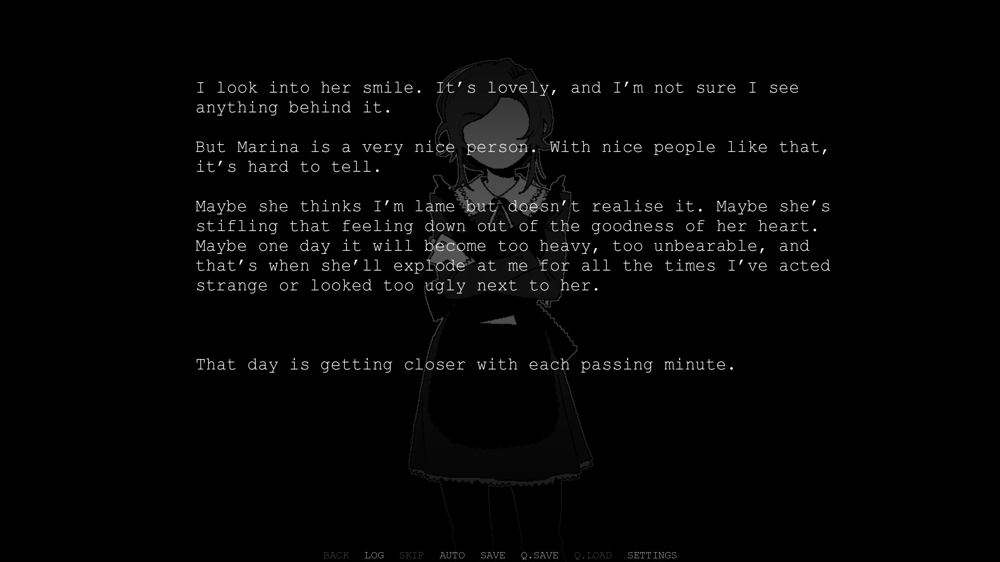

The indie gaming sphere is no stranger to homerun hits from people who've never made a game before. It happens all the time. And yet, sometimes you find one that's so special that you can't help but share it with others as an example of what indie gaming could be. One you know people will think about years down the line and wonder how it came from nowhere. But it didn't come out of nowhere. Toby Fox didn't start with Undertale, Toby Fox was a creative person from the start. Stephen Gillmurphy was being creative before he ever began working on Space Funeral, too. In the VN sphere (and narrative gaming in general), we get to see a lot of people who are true creatives make their first game after years of perfecting another, related craft. You find these gifts to the world, and hold them up as an example of what we need more of, despite everything wrong with the world trying to keep creativity tied to capitalist incentive. You find a game that you love everything about. And for me, there's been so many of these. The House in Fata Morgana was my first full VN to ever get a 10/10 score, as a truly remarkable, one-of-a-kind masterpiece. One that would be a crime to tell you anything substantial about. And, my dear friends, >Z.A.T.O. I Love the World and Everything In It (which I'll be abbreviating as Z.A.T.O.) is yet another game that is one-of-a-kind.
Before I go any further, please play Z.A.T.O. for yourself. It's entirely free, and it's short.
My Expectations
Before I ever played it, I was aware that Z.A.T.O. was a denpa-adjacent psychological horror mystery visual novel set in 1968 Russia by musical artist Ferry (nopanamaman). I knew that it had a small cast. I assumed that the music would likely be the strongest part of the game. Other than that, I knew that the Ferry as an artist also writes comics, so I figured that the quality of character CGs and sprites would be pretty high. I went in with literally zero expectations in terms of the story.

Music, Sound, and Artwork
I hope you'll forgive me for using the same format as my Slay the Princess review; I really like this breakdown and it helps me divide my thoughts the way I want. Z.A.T.O. is, artistically, beautiful. Every character sprite is expressive and well-defined, making the small cast feel all the more human as individuals with both defining and overlapping traits, and importantly they're believable as teenagers. The backgrounds are entirely composed of filtered photographs, giving the game an eerie and yet comforting feeling, like the world's not too far away, similar to Milk inside a bag of milk inside a bag of milk, but much less distorted. This game is kinetic, we never personally explore the town, but when you see the same background repeated you feel like you're back to familiar ground, and that relief is made all the better by having locales that feel "normal." The CGs for this game, however, are the best part, utilizing Ferry's mastery of comic book staging to make somber scenes feel somber, and active scenes have the intensity that they're due. In short, the artstyle is somewhere between an American comic book and anime, and it's perfect for the story Ferry is telling. It feels personal. Aside that, the music for this game is strange. It's actually all public domain tracks from various artists (other than the opening theme), and while Ferry is a great musical artist individually, I think the choice to go with free music really worked in her favor. You'd think that by not making the music herself, Ferry would be giving up something she has mastered for no benefit. However, in divorcing that part of the process, she gets to finely pick exactly the moods neeeded for the situation, and I think it really works. The opening theme for the game, by contrast, is an instrumental of SCENE's Out of Love, which is quite fitting for the themes this game gets into. The sound design is crisp, simple, and evocative, and overall you'll get no complaints from me.

Why I Love Z.A.T.O. and Everything in It
Z.A.T.O. is a kinetic visual novel that borrows a lot of denpa culture, using those themes to express a feeling that you don't typically see out of those: a message of bittersweet positivity. This section's going to be short, partially because the game is short, but mostly because I want you to play this for yourself. Asya's an extremely relatable character, especially for me, in ways that are both good and bad. Positivity is a coping mechanism, sometimes, for people that are deeply hurting, and I've been there. She displays signs of emotional codependency and an apologetic trauma response, both things I'm personally working through. And yet, she tells a different story than I do. Sometimes, a coping mechanism goes from a trauma response, to controlled delusion, to tightly-held belief, and along the way you make the thing you started doing to survive a reality. A lot of this game is like that. In a lot of ways, this borrows the denpa game structure of a rollercoaster, but because Ferry is a master of gradual subversion of expectations, when things come up that are more fantastical, it's easy to say "yeah, okay, I can see that," and when Asya goes from having a great day to having a soulcrushing experience that I don't know if many people would survive, you feel for her as well as yourself for ever believing it could last. At least I did. You get on, and you're on the lift hill, but you're far enough back you can't see the top. Eventually, you start careening downward without warning, and by the time you've caught yourself, you're back on the lift hill again. You forgot to get off, dummy. You can't, now, you've got to ride it around again. And that's what makes this game so brilliant and so painful to read. Z.A.T.O. is a story about the things you can and can't change, and that rollercoaster is one of those things. It's a microcosm of life.

Would I recommend this game?
Ferry made a masterpiece of a kinetic visual novel with Z.A.T.O.. It has a story I think everyone should experience, if only once. My only concern with it is that if you're not in a good place mentally, it might prove to be too much alone. Bring a friend. Always bring a friend. I love it. 9/10. I love you. I love you. I love you.